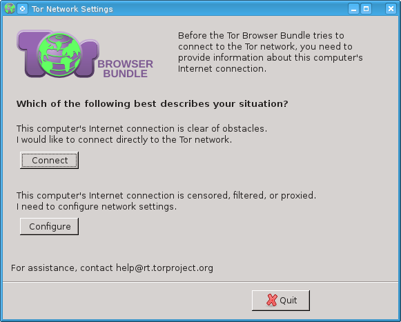
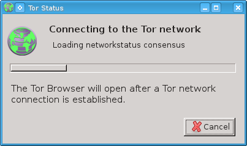
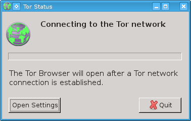
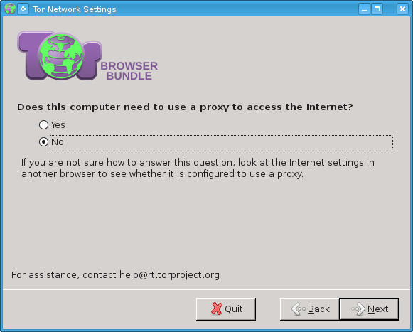
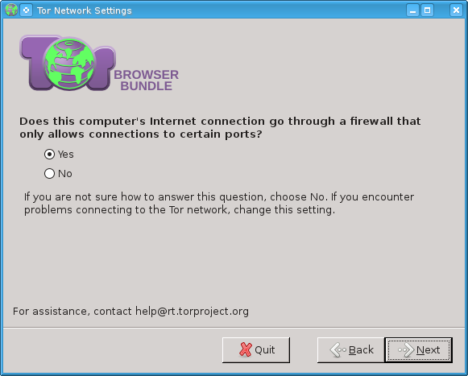
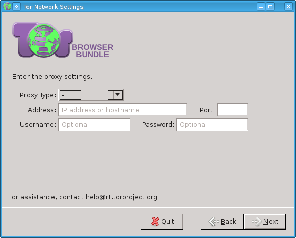
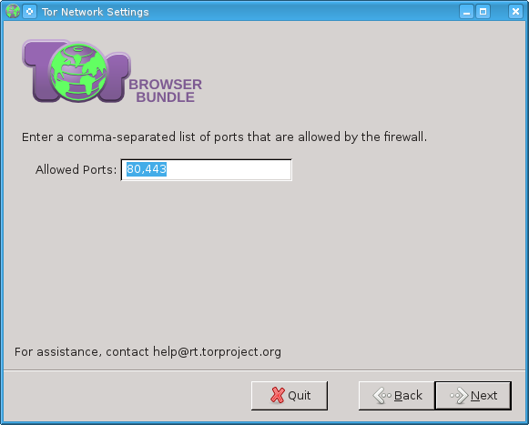
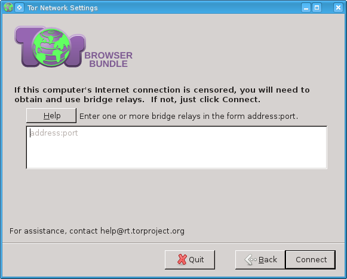
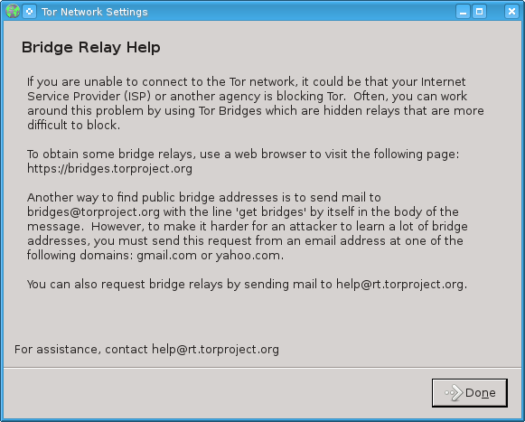
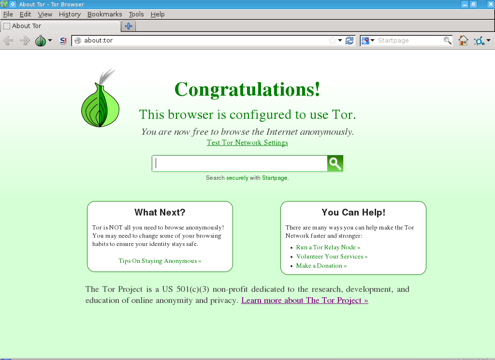

Development Notes about setup-dist and tor-launcher addon
 This page is archived.
This page is archived.
Newer Screenshots
https://gitlab.torproject.org/legacy/trac/-/wikis/doc/meek
Older: Thats what the tor-launcher addon looks like as in TBB 3.0alpha2










Categories: Development